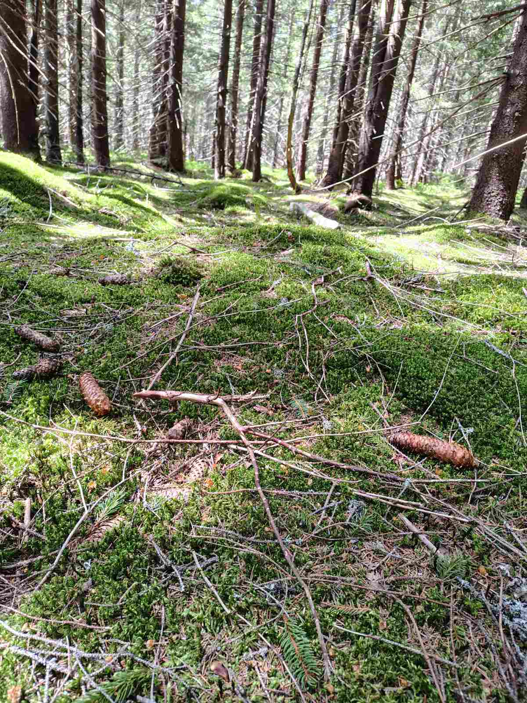
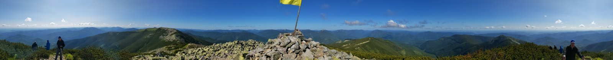
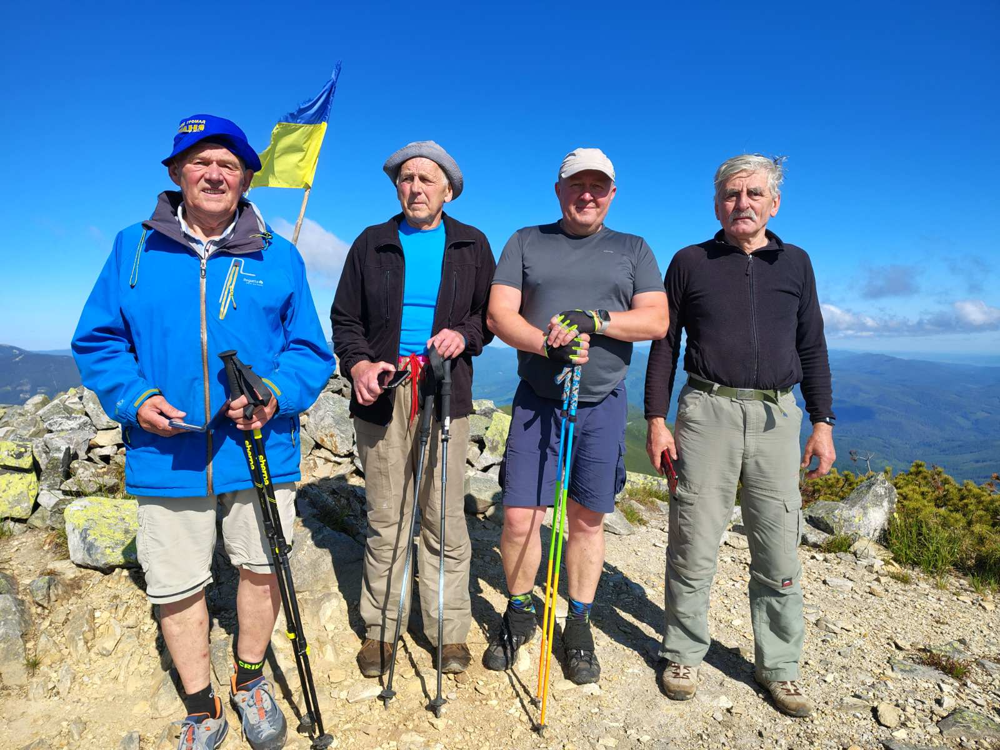
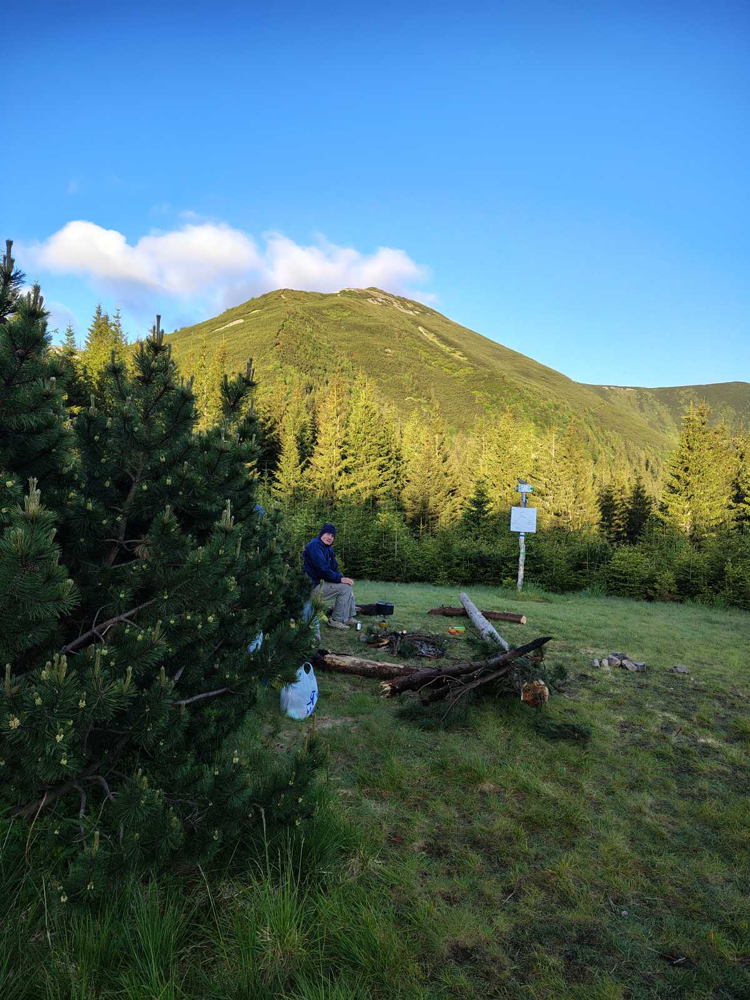

Відкрий рідний край разом із нами
ПОКИ ПРИ СИЛІ — МАНДРУЙ!
Мандрівки, здорове життя, дружнє коло. Долучайся до клубу «Рідня» — досліджуй маршрути, місця слави УПА, отримуй позитивні емоції.




Хто ми?
Клуб мандрівників «Рідня» створений благодійним фондом громад «Рідня». Ми об'єднуємо людей, які люблять природу, історію та активний відпочинок.
- Популяризація здорового способу життя
- Маршрути місцями бойової слави УПА
- Дружні походи та благодійні збори
- Відкриті для всіх віком від 18 років
Наші цінності
Безпека
Досвідчені провідники, аптечки та перевірені маршрути.
Спільнота
Дружнє коло однодумців, які підтримають у поході.
Екологічність
Ми за чисту природу та відповідальний туризм.
Благодійність
Частина внесків іде на підтримку ЗСУ.
Що кажуть мандрівники
«Неймовірна атмосфера! Вперше пішла в гори і закохалася. Дякую «Рідні» за організацію та підтримку.»
«Ходимо з клубом уже два роки. Чудові маршрути, гарна компанія, а головне — спільна справа для перемоги.»
«Дізнався багато нового про історію УПА. Маршрути продумані, провідники — справжні професіонали.»